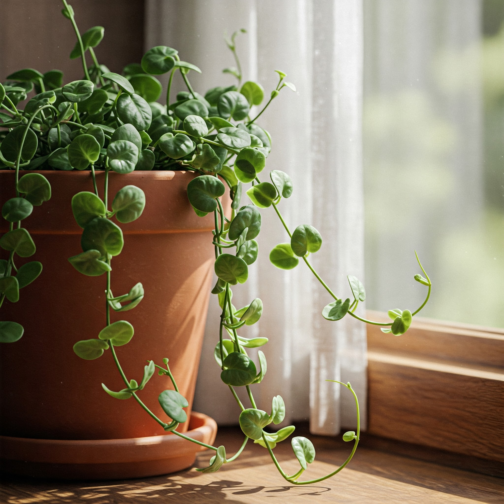

Maidenhair Vine (Angel Vine)

Description
Maidenhair Vine (*Muehlenbeckia complexa*) is a charming and versatile plant featuring thin, wiry, often reddish-brown stems that form a dense, tangled mat. It's adorned with small, round, glossy green leaves. Native to New Zealand, it can be grown as a trailing houseplant, in hanging baskets, or even trained onto topiaries. It has a delicate, airy appearance.
Care Instructions
- Light: Prefers bright, indirect light indoors. Can tolerate some direct morning sun, but avoid intense afternoon sun which can scorch the delicate leaves. Can survive in lower light but may become leggy.
- Water: Keep the soil consistently moist but not waterlogged, especially during the growing season. Water when the top inch of soil feels dry. Reduce watering slightly in winter. Good drainage is essential.
- Soil: Use a standard, well-draining potting mix.
- Temperature: Tolerates a range of temperatures but prefers cooler to average room temperatures, ideally between 10-24°C (50-75°F).
- Humidity: Tolerates average indoor humidity but appreciates slightly higher levels. Misting occasionally can be beneficial, particularly if the air is dry.
- Fertilizer: Feed sparingly with a balanced liquid fertilizer diluted to half-strength once a month during the spring and summer growing season.
- Pruning: Prune as needed to maintain shape, encourage bushier growth, or control its spread. It tolerates pruning well.
Fun Facts
- Common Names: Maidenhair Vine, Creeping Wire Vine, Angel Vine, Mattress Vine, Necklace Vine, Pohuehue.
- Origin: Native to New Zealand.
- Versatility: Used indoors in pots and baskets, and outdoors (in zones 8-10) as ground cover or spilling over walls.
- Not a Fern:** Despite the common name "Maidenhair Vine," it is not related to Maidenhair Ferns (*Adiantum*).
- Tiny Flowers: Produces very small, inconspicuous creamy-green flowers, sometimes followed by small, translucent fruits.
Toxicity
Generally considered non-toxic to humans, cats, and dogs, making it a relatively safe choice for homes with pets and children.